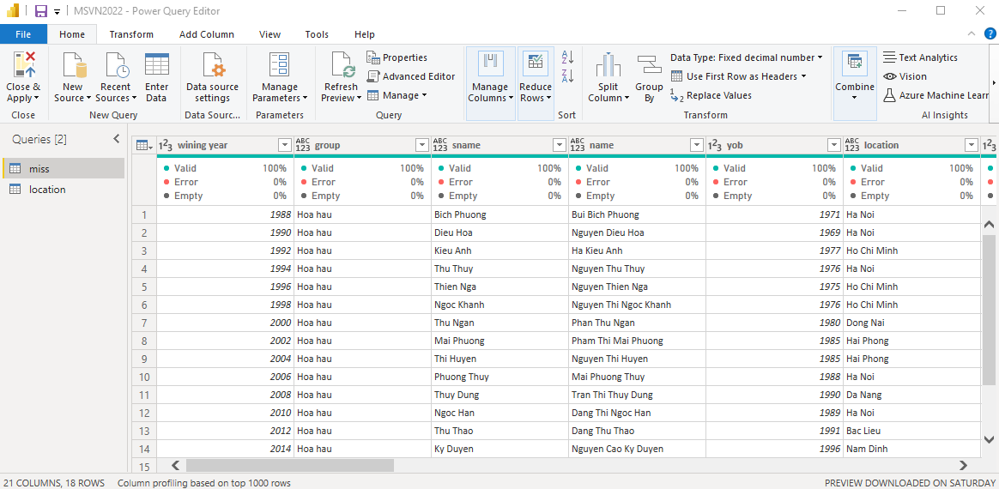
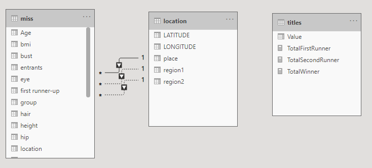

Visualing Miss Vietnam Winner using Power BI
1. Background:
This small project is done during my spare time working on my portfolio webpage. I was trying to search from my previous Power BI projects but they seem to be quite popular such as sales analysis, customer analysis etc. The topic of Miss beauty analysis came to my mind without planning, when I was reading the news.
2. Dataset Introduction:
The dataset is about Miss Vietnam winners between 1988 and 2022, which I collected from the Internet, and mannually input into a Excel spreadsheet. Some information related to the body measures might not be 100% accurate but this is just for the demonstration purpose.
3. Data preparation:
The process of data extraction, loading and transformation is done using Power Query, a part of MS Power BI. In particular, this stage includes checking data, converting text to numerical for year, body measures, and adding one measure for Age.
Example of raw dataset
{kind=link}
4. Data visualization:
The main feature of this project is visualize the data and not heavily focused on modelling and DAX. However, there is one relationship built for linking the location of the winners and regions. DAX formulas are also built for counting these relations.
Example of data modelling
{kind=link}
Example of data visualization

A live report can be accessed via this link. However, it requires a Power BI account to login.